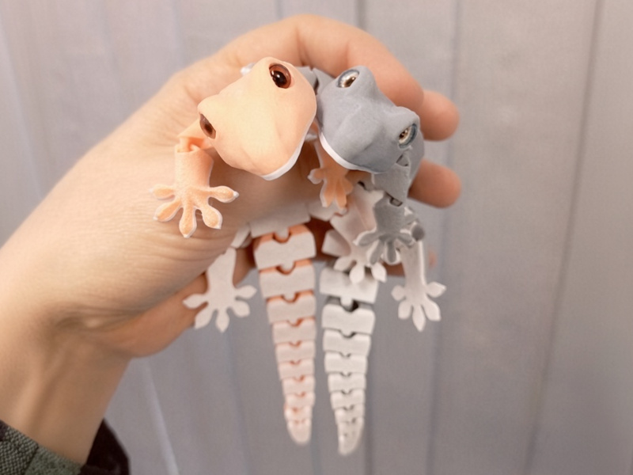

This was one of my first moving toys. I took a real gecko as a reference and set myself the task of making the very first lizard as close to the prototype as possible.
It took me two weeks of evenings after work to refine every detail, test the joints for strength, and make corrections. After the successful prototype, it took me several more months before I decided to publish my creation.
It combined 3D sculpting, CAD joints, curiosity, excitement and a bit of soul. Unexpectedly, it became quite popular. It will always remain my favorite creation.
View on Thingiverse →